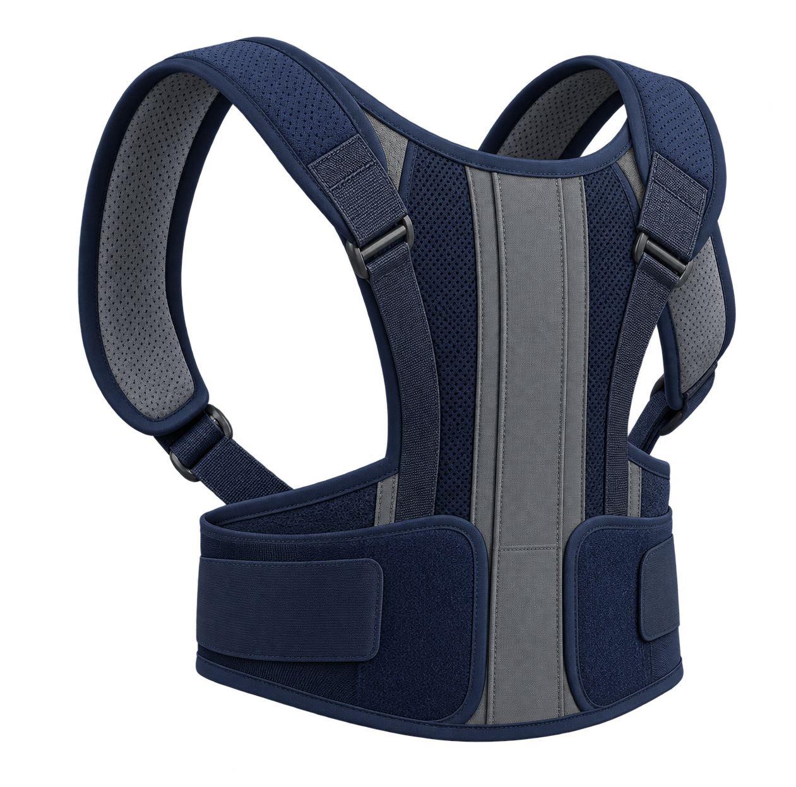
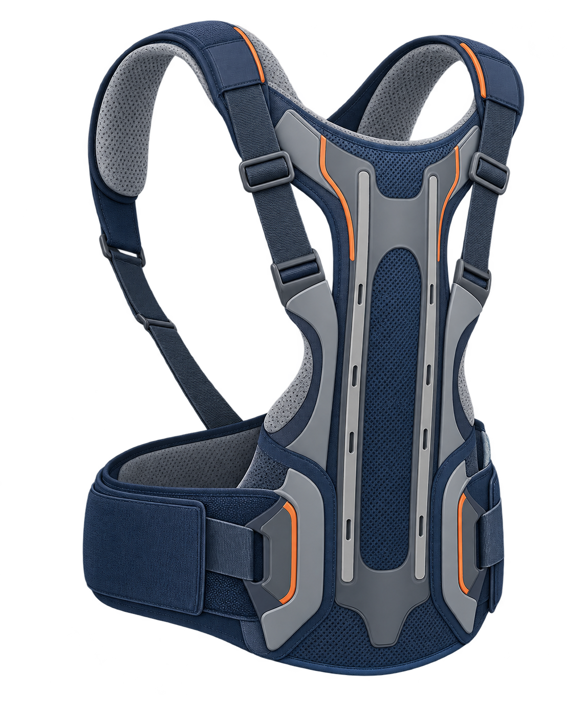
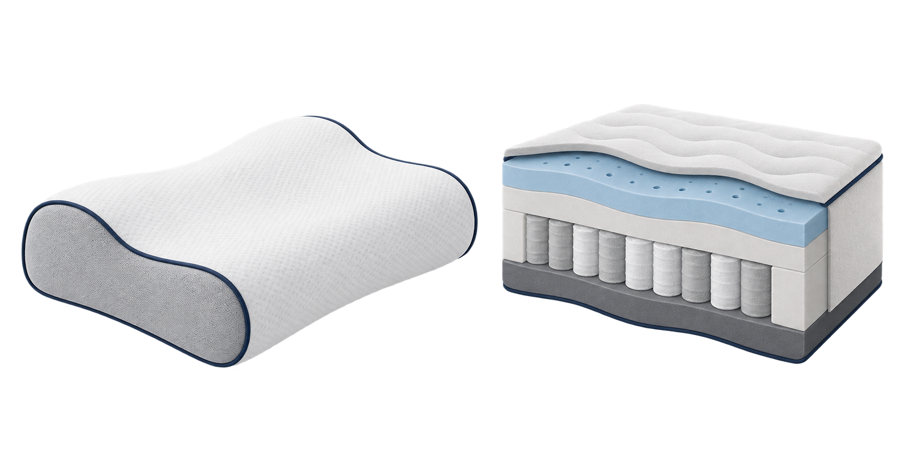

市販ベルト・整体・矯正枕だけで、
成人の猫背を治す根拠は十分ではありません。
大切なこと
対象と限界を確かめ、
能動的な運動を中心にします。
猫背改善シリーズ 第2回
医知創造ラボ
治療の代わりにしない。
一般向け ／ 医学的根拠を整理
最初の結論
市販ベルト・整体・矯正枕だけで、
成人の猫背を治す根拠は十分ではありません。
大切なこと
対象と限界を確かめ、
能動的な運動を中心にします。
この回で確認すること
市販ベルトと医療用装具
同じものとして扱わない。
整体・徒手療法
短期の変化と持続的効果を分ける。
避ける場面
危険なサインを確認する。
よくある誤解
ベルトを着ければ、
背骨の問題まで
治せる。
短時間、姿勢を
意識するきっかけにはなる。
支える役割まで任せない。
医療用装具の研究を読む
施術・グッズの前に確認
椎体骨折の評価が必要です。
骨の状態を確認します。
神経の評価が必要です。
評価前に安易に受けない。
市販ベルトの位置づけ
市販ベルトは、
背骨の治療を
代わるものではありません。

医療用装具は別のもの
医療用装具は、
骨粗鬆症や骨折の
評価と切り離しません。

枕・マットレスの役割
矯正枕や寝具を、
胸椎後弯を治す
治療とは受け取らない。

今日のまとめ
短時間の気づきに
使う補助。
対象を限って
医療者と検討。
短期の変化と
持続的効果を分ける。
ご視聴ありがとうございました
役に立ったら
応援してください。
次回も見たい方へ
登録で応援を。
安全な運動療法を
お楽しみに。